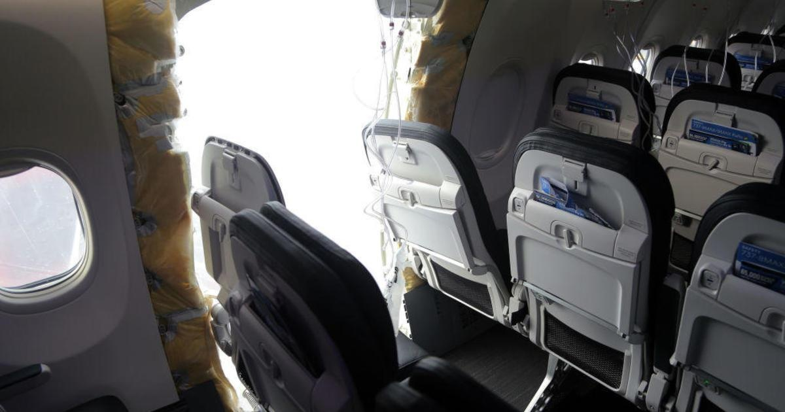

Sen. Tammy Duckworth calls for FAA review of Boeing's failure to disclose 737 Max flight deck features to pilotsSenator Tammy Duckworth is urging the Federal Aviation Administration to take a closer look at how it responds to what she says is a pattern by Boeing of failing to disclose flight deck features of the 737 Max to pilots, according to a letter to be sent Thursday and obtained exclusively by CBS News. Duckworth, Democrat of Illinois and chair of the Senate's Aviation Safety, Operations and Innovation Subcommittee, is calling on FAA Administrator Michael Whitaker to investigate why Alaska Airlines pilots were unaware the plane's cockpit door was designed to automatically open during a rapid depressurization — which is exactly what occurred on flight AS1282 when a door panel on a Boeing 737 Max 9 in early January. "Boeing's failure to disclose this feature is chilling given its history of concealing 737 MAX information from pilots," Duckworth writes. National Transportation Safety Board Chair Jennifer Homendy told reporters following a Senate Commerce Committee hearing on January 17 that the flight crew should have been told about the feature. "Nobody knew about it. So it was a complete surprise. And the flight crew needs to know," she said, adding, "knowing this could occur is pretty key to safety." Following the January 5 incident with the door panel, Boeing updated the Flight Crew Operating Manual to include that the cockpit door opens in order to equalize pressure between the flight deck and cabin in the event of a rapid depressurization of the passenger cabin. "We agree with Senator Duckworth. As a fellow pilot, she understands the importance of informing pilots about safety critical designs and systems." said 737 Captain Dennis Tajer, a spokesman for the Allied Pilot Association, which represents American Airlines pilots. "This nondisclosure of the cockpit door design just adds to Boeing's rap sheet of withholding information from pilots. The FAA has got to stop this bad behavior before tragedy strikes, again." But NTSB investigators say it was not only the pilots of Alaska Airlines flight 1282 who were unaware of the cockpit door design to swing open during a depressurization. It caught the flight attendants off guard as well as they were responding to the emergency in the cabin. "When safety culture is broken down and the expediency of shoveling profits to Wall Street becomes the mission — this is what you get. It's not okay. It's not sustainable," Sara Nelson, president of the Association of Flight Attendants-CWA, representing 50,000 flight attendants at 19 airlines including Alaska Airlines, told CBS News. "And we as a nation cannot allow this great American company to be torched by shareholder capitalism. We stand with the workers trying right now to take back the company they built." In her letter, Duckworth says the FAA needs to consider if any changes are required to the cockpit of the 737 in light of the door's design and that the regulator may need to consider taking action against the company. "This unknown, undisclosed feature resulted in the flight crew being surprised when the rapid depressurization event caused the cockpit door to slam open, sucking an emergency checklist out of the cockpit and removing one of the pilots' headsets," writes Duckworth. "As a pilot, I cannot convey strongly enough how critical it is for the flight crew to be fully informed of all features on the flight deck. Keeping pilots in the dark about features on the MAX has become a pattern at Boeing. This is the third time Boeing has failed to disclose a flight deck feature to 737 MAX pilots. This is dangerous, and FAA must not view this latest omission in isolation. Instead, FAA should consider regulatory action informed by Boeing's past pattern of deceptive conduct." Duckworth points to Boeing's decision not to include the Maneuvering Characteristics Augmentation System, or MCAS, in the flight manual for the 737 Max and its failure to inform pilots that the Angle of Attack (AOA) disagree alert aboard most Max 8 airliners was not functional. It was a design flaw with the MCAS system that led to the , and the AOA issue that was not disclosed until after the second Max 8 crash. The AOA sensor was a factor in both crashes. "While this was not a safety-critical feature, the manufacturer's brazen disregard for type design requirements and lack of candor with pilots is breathtaking," writes Duckworth. "Even more disturbing is FAA's failure to consider any kind of civil enforcement action. If Boeing faces no consequence from FAA when it engages in outrageously inappropriate conduct like this—what incentive does the company have to change its behavior?" Boeing said in a statement to CBS News late Wednesday that it is "committed to continued transparency and sharing information with our regulator and operators." In recent weeks, Duckworth has called on the FAA to for the 737 Max 7 and Max 10 that would have allowed the planes to be certified for use despite an issue with the anti-icing system found on all Max engines. Boeing following her letter to the FAA and pledged not to seek certification of either airliner until a . Those delays have resulted in key Boeing customer Southwest Airlines cutting its capacity of planes for 2024 and United pausing pilot hiring and encouraging some of its existing pilots to take unpaid leave as both carriers will receive fewer airplanes than expected. —Katie Krupnik contributed reporting. |
 |